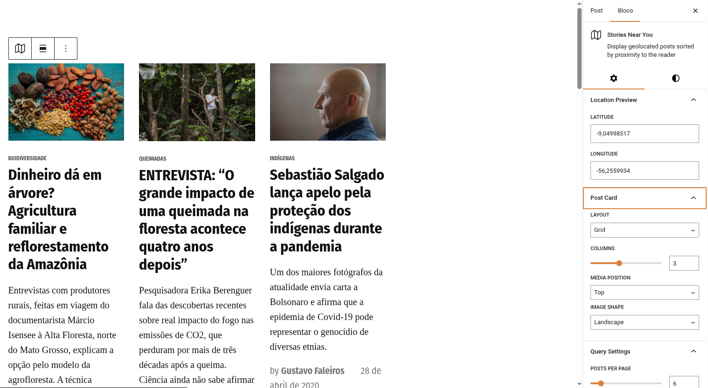
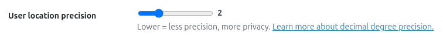
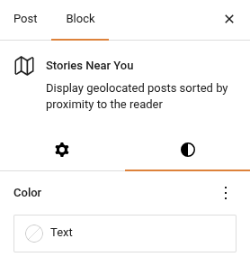

Stories Near You
The Stories Near You block (jeo/stories-near-you) displays geolocated posts that are closest to the reader's current location. It uses the browser's geolocation API (with explicit user consent) to find nearby stories and presents them in a customizable card layout.

Inserting the block
- In the Gutenberg editor, click the + button to add a new block.
- Search for Stories Near You and select it.
- Configure the block settings in the Inspector panels.
How it works
When a visitor loads a page with this block:
- The block shows a consent prompt: "Use my location" or "Skip".
- If the user consents, the browser obtains their coordinates (rounded for privacy based on the geolocation precision setting).
- If the user skips, the block falls back to the default map center configured in JEO Settings.
- The block queries the WordPress database for the closest geolocated posts using geographic distance (
ST_Distance_Sphere). - Posts are rendered as cards in the chosen layout.
Geolocation precision
The User location precision setting (in JEO → Settings → General) controls how many decimal places are kept from the browser geolocation. Range: 1–5, default: 2. Lower values mean less precision but more privacy.

Block settings
The Inspector panels provide extensive customization:
Post Card
- Layout: Grid or List.
- Media position: Top, Left, Right, or Behind (the image is placed behind the text).
- Image shape: Landscape, Portrait, Square, or Uncropped.
- Columns: Number of columns in grid layout (1–6).
Query Settings
- Posts per page: Total posts to display (max 36).
- Post type: Filter by post type (only shown if multiple geo-enabled types exist).
Filters
- Categories: Include specific categories.
- Tags: Include specific tags.
- Category exclusions: Exclude specific categories.
- Tag exclusions: Exclude specific tags.
- Custom taxonomies: Filter by custom taxonomy terms.
Display
- Thumbnail: Show/hide featured image.
- Category: Show/hide category badge.
- Date: Show/hide publication date.
- Excerpt: Show/hide excerpt (with configurable word count).
- Author: Show/hide author name.
- Author avatar: Show/hide author photo (requires Author enabled).
- Read more: Show/hide "Read more" link (with custom label).
Typography & Spacing
- Type scale: Font size scale (1–10).
- Image scale: Image width in horizontal layouts (1–4).
- Column gap: Spacing between columns (small, medium, large).
- Min height: Minimum height for "Behind" layout.
Colors
Text and link colors use the native Gutenberg color settings (not a separate panel).

Cross-block deduplication
When multiple Stories Near You blocks are on the same page, posts are never repeated across blocks. The first block shows the closest posts, the second block shows the next closest (excluding the first block's posts), and so on.
This works both in the editor preview and on the frontend.
Newspack compatibility
If the Newspack Blocks plugin is active, the block automatically uses Newspack's card templates and styles for a seamless visual integration with your Newspack theme.
Requirements
- Posts must be geolocated (have
_related_pointmeta data). See Geolocating posts. - The JEO default map center must be configured in Jeo → Settings (used as fallback when the user does not share their location).